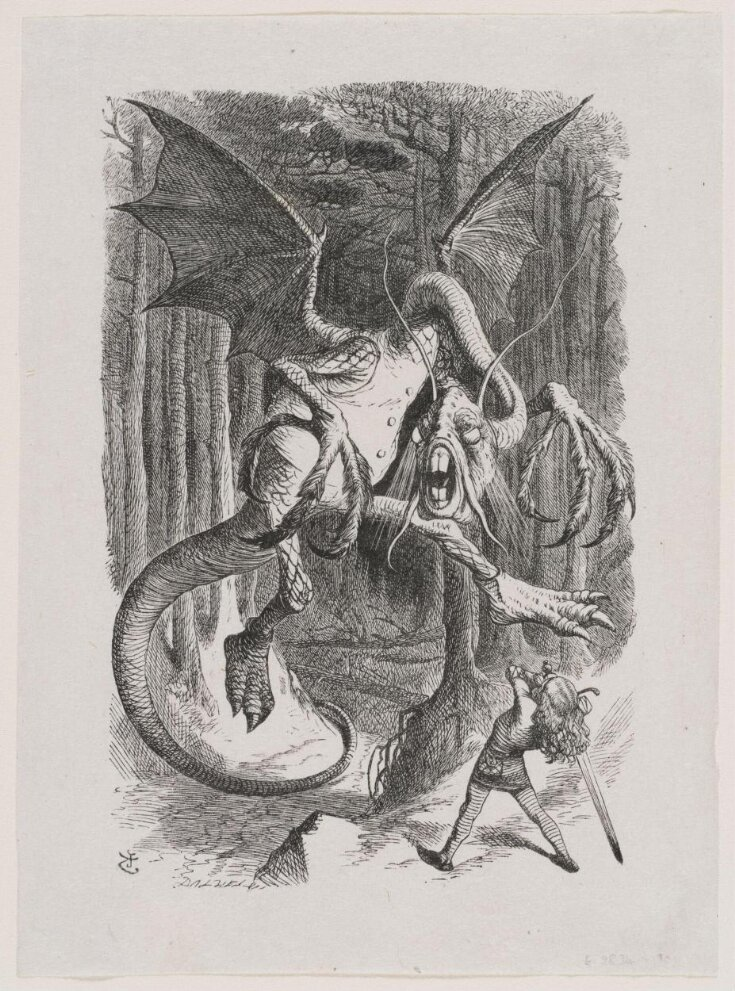

Ever since I read Alice in Wonderland and Through the Looking Glass I've
been fascinated with the poem of the Jabberwock. The nonsensical language
that nonetheless manages to evoke both such delight and such fear is undeniably
one of a kind. This piece is my second adaptation, and I'm pretty sure I'll try
my hand at it again sometime in future.
